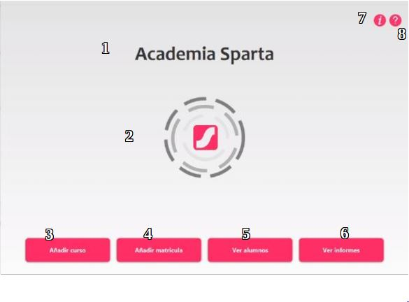

Esta es la pantalla principal de la aplicación, a la cual accederemos tras un inicio de sesión exitoso en la pantalla de Login.
Esta pantalla consta de varios elementos entre los que podemos destacar:
1.-Título.
2.-Logotipo de la empresa.
3.-Botón “Añadir curso”. Al pulsar este botón tendremos acceso al formulario para añadir nuevos cursos a la base de datos.
4.-Botón “Añadir matrícula”. Al pulsar este botón tendremos acceso al formulario para crear nuevas matrículas y añadirlas a la base de datos sobre cursos previamente creados.
5.-Botón “Ver alumnos”. Al pulsar este botón tendremos acceso al formulario para ver la tabla de los alumnos registrados.
6.-Botón “Ver Informes”. Al pulsar este botón tendremos acceso a ver los distintos informes.
7.-Botón “Acerda de…”. Al clickar este botón obtendremos información sobre la aplicación así como los nombres y correos electrónicos de los desarrolladores.
8.-Botón encargado de desplegar la ayuda.
